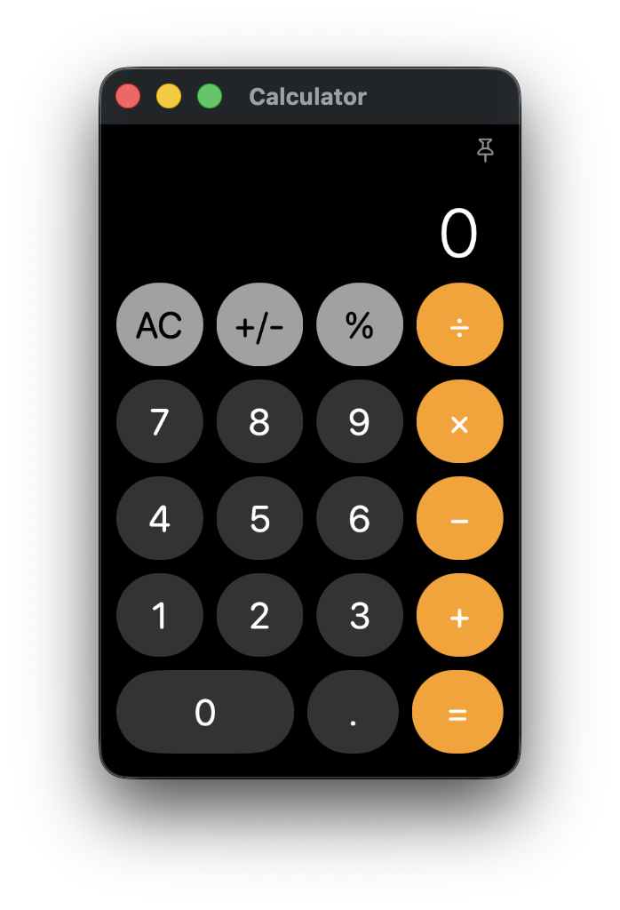

Calculator app for macOS
When I started using macOS, I was frustrated by the limitation of the built in Calculator app, which doesn’t support multiple windows, and running the app in multiple instances is cumbersome. I looked around the App Store and was surprised to find various scientific calculators with exotic subscription models (for a desktop app?!?), but I couldn’t find a simple, basic calculator with multi-instance support.
I had already heard about vibe coding and AI assisted coding, so I thought maybe I (well… the AI) could create the ideal Calculator app. So I downloaded Xcode, had a conversation with my AI friend, and two and a half hours later, I had exactly the app I wanted.
And to be honest, that’s a bit scary. I haven’t written even a script in the last 9 years, and by barely touching the source code, the AI did on my behalf what I was looking for.
Please feel free to use my basic multi instance calculator if you’d like to save a few hours of your own (or your AI’s) life :-)
Download Calculator_1.1(2).zip (635 KB), then extract and move the .app file to your Application's folder.

Features:
- Multiple independent calculator windows
Open as many calculator instances as you need simultaneously, for side-by-side calculations.
- Dock click opens a new calculator
Clicking the app icon launches a fresh calculator instead of forcing you to reuse the same one.
- Classic design
Familiar, clean interface inspired by the built in macOS Calculator.
- Resizable window
Adjust the calculator window size to fit your workflow and screen space.
- Lightweight and fast
No bloated features, 576 KB size, a simple calculator that launches instantly.
- Free to use, no subscriptions, no nonsense
No cost, freely distributable in unmodified form.
- Basic everyday calculations with keyboards shortcuts
Numbers: 0-9
Decimal: . or ,
Operators: +, -, *, x, /
Equals: =, Return, or keypad Enter
Clear: C or Escape
Delete one digit: Delete or Backspace
Percent: %
Change sign: S
Always on top: T
Copy display: Command-C
Paste number: Command-V
New calculator window: Command-N
- Always on top feature
Keep the calculator conveniently accessible while working in other apps.
- Native macOS app
Built specifically for macOS using Xcode, not a wrapped web app.
- Customization options (NEW)
Settings menu with customizable Dock click behavior and selectable international number formats.
Version history:
May 17, 2026 - 1.1 (2) - Added a new Settings window with customizable Dock click behavior and selectable international number formats. Improved number formatting, copy/paste parsing, and preference persistence.
May 13, 2026 - 1.0 (6) - First public release
System Requirements
- OS: macOS 14.6 or later (tested on macOS 14.6 and macOS 26.5)
- Processor: Intel or Apple Silicon Mac (Universal binary)
- Memory: Any Mac capable of running the supported macOS version
- Disk Space: 1 MB free disk space
- Internet Connection: Not required
- Permissions: No special permissions required
Disclaimer
This software is provided free of charge for use and redistribution in unmodified form. The software is provided "AS IS", without warranty of any kind, express or implied, including but not limited to accuracy, fitness for a particular purpose, or noninfringement.
In no event shall the author be liable for any claim, damages, losses, or other liability arising from use of the software, including calculation errors, poor arithmetic, or consequences resulting from trusting free software a little too much.
This website uses Google Analytics, a web analytics service provided by Google. You can opt out of Google Analytics tracking by using tools like the Google Analytics Opt-Out Browser Add-on.
Webpage is created & owned by Tamas Domjan.
|
|